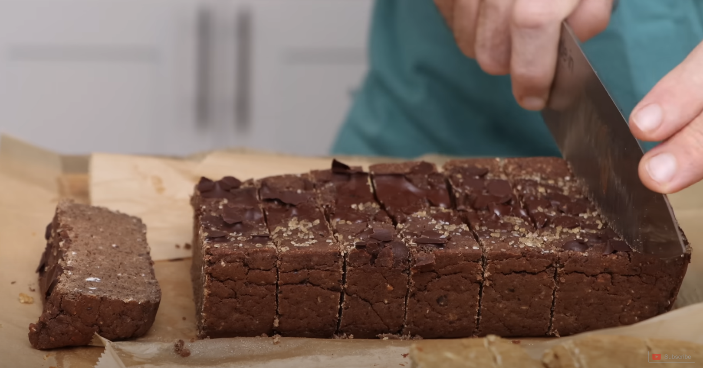

Chocolate Brown Bean Protein Bar

Description
These chocolate brown bean protein bars are a great, nutritious snack packed with plant-based protein and fiber. They're easy to make and are perfect for a post-workout boost or a quick on-the-go treat!
Ingredients
- 1 can black beans (about 400 g), rinsed
- 2 dl oats, lightly blended
- ½ dl dates (about 4 pieces)
- 4 scoops vanilla protein powder (about 60 g)
- 0.6 dl cocoa powder
- 0.6 dl maple syrup
- ½ dl aquafaba (liquid from the beans)
- Optional: vegan chocolate, chopped
Instructions
- Preheat your oven to 175°C (350°F).
- In a food processor, blend the black beans, oats, dates, vanilla protein powder, cocoa powder, maple syrup, and aquafaba until you get a smooth, thick batter.
- Spread the mixture evenly into a lined baking dish.
- Top with chopped vegan chocolate, if desired.
- Bake for about 20 minutes, or until the bars are set.
- Allow them to cool before cutting into squares. Enjoy your homemade protein bars!